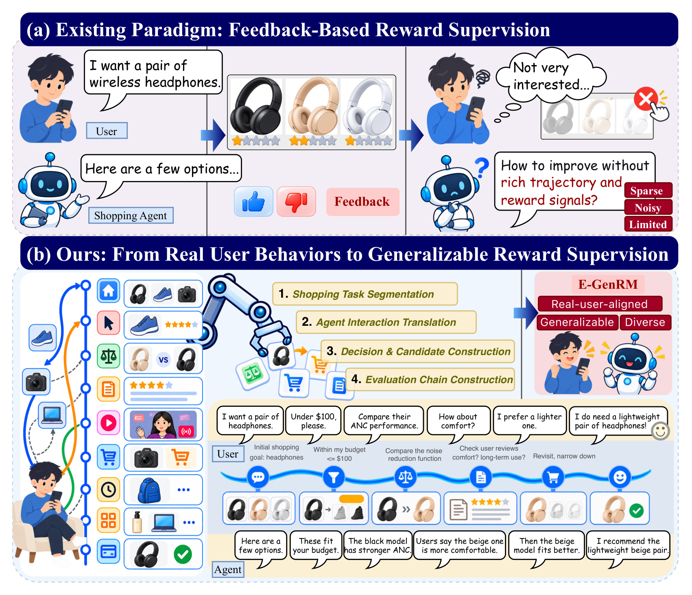
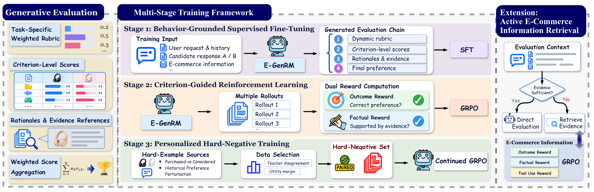
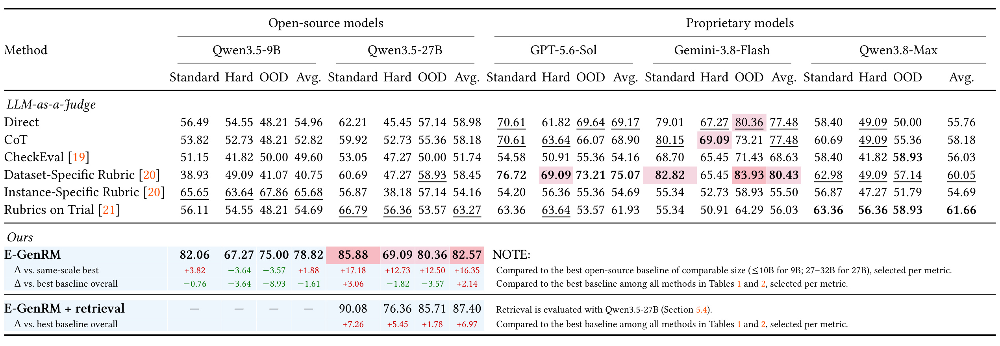
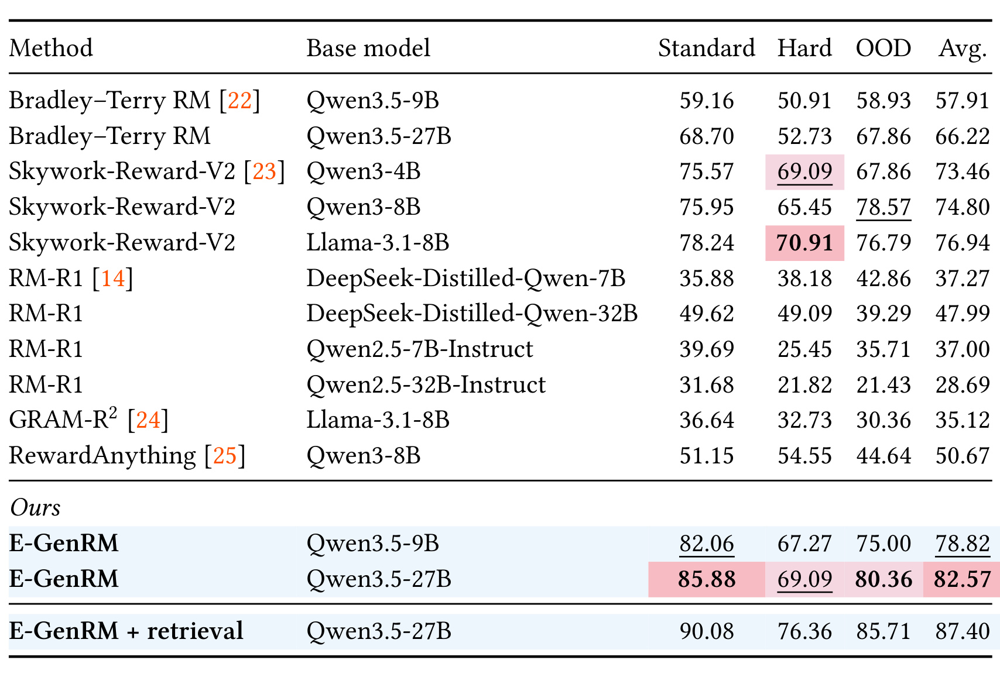
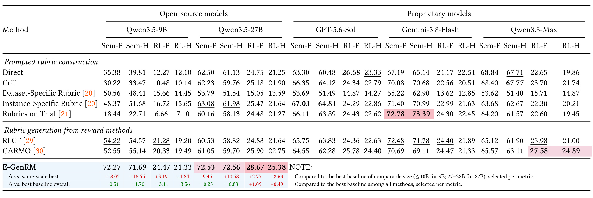
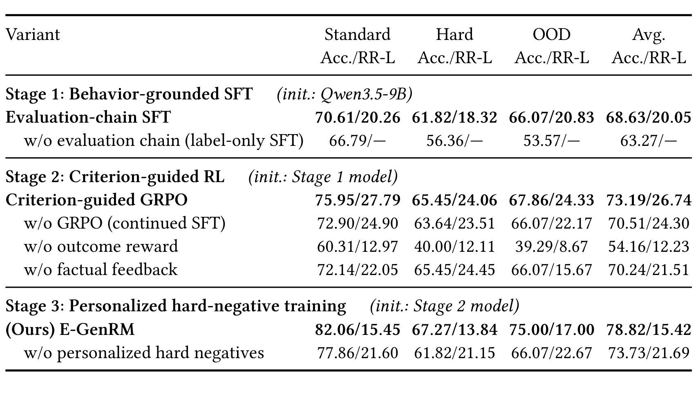
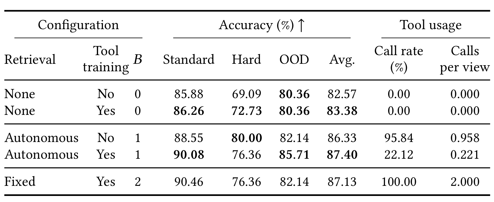
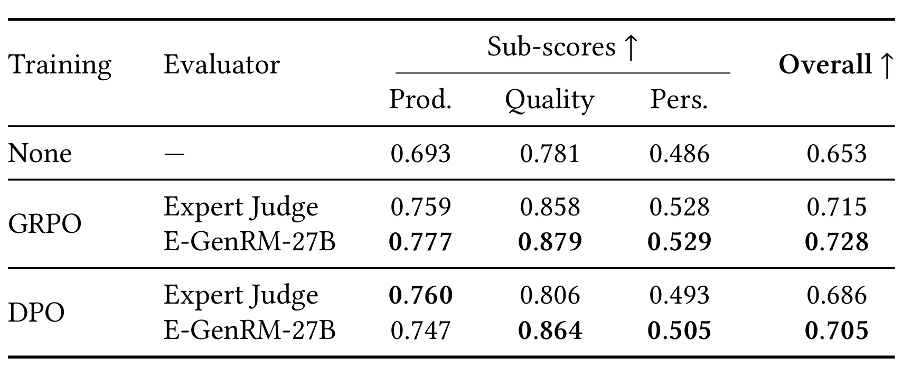
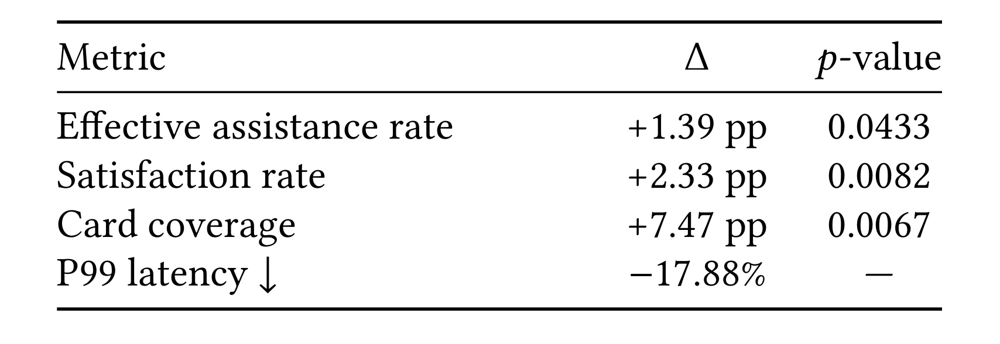

E-GenRM：面向开放式电商购物 Agent 的生成式奖励建模
E-GenRM 研究怎样判断一段购物助手回复是否真正符合用户的当前要求、历史偏好和商品事实。作者 Ying Sun、Qiuyu Zhao 等来自阿里巴巴淘天集团，合作作者 Xiao Wang 来自维也纳工业大学；一作主机构为阿里巴巴。论文入口：arXiv:2611.03008。arXiv 首版公开于 2026 年 11 月 2 日，PDF 内文日期为 11 月 4 日；本次于 11 月 4 日核验全文。本轮未核验到独立代码、模型或基准下载入口，不宣称已开源。
购物 Agent 的现有能力决定用户会提出什么请求，也限制系统能收集到哪些训练轨迹；同时，把多个购物条件和用户偏好压成一个总分，会丢失具体判断所依赖的证据。论文尝试从全站自然购物行为构造更丰富的评价轨迹，让奖励模型先逐项判断，再形成整体偏好。
1. 背景和问题
数学与代码任务为强化学习提供了相对清晰的反馈入口：答案是否正确、程序是否通过测试，通常能由规则或执行器判断。购物任务的评价对象则同时包含价格、功能、商品属性、时效、用户偏好和当前购买目的。两款商品都在预算内，不代表它们对同一位用户同样合适；一条回复满足最新一句提问，也可能遗忘前几轮已经明确的限制。因此，E-GenRM 并没有把问题限定成查询与商品的相关性打分，而是将它定义为给定完整决策上下文后，对两条候选 Agent 回复作出偏好判断。其训练产物是评价器，可以进一步为购物 Agent 的偏好学习或强化学习提供信号。
传统商品搜索通常要求用户多次搜索、筛选、浏览，再自行比较商品。购物助手则希望承接一个更开放的目标，例如为通勤选一副轻便、降噪好、价格受限的耳机，并帮助用户逐步补充条件。评价这种交互，必须记住条件如何累积、哪些要求仍有效、哪些历史偏好已被本次明确指令覆盖。只判断最后一次查询与返回商品的文本相关性，无法回答推荐过程是否遵守了这些约束。论文所谓开放式，并不表示已经覆盖所有商业场景，而是希望训练轨迹的来源超出当前 Agent 已支持的有限任务，使评价模型接触更多任务阶段和决策因素。
作者指出第一个数据问题是能力与轨迹的反馈闭环。若某类 Agent 只擅长查商品，用户很可能只向它提出查商品的请求；由这些请求产生的日志，也就难以教会评价器判断复杂比较、跨会话偏好或澄清是否必要。即使系统积累很多对话，任务多样性仍可能被当前能力限制。论文因此转向整个购物应用里的行为记录，而不是仅使用通过 Agent 发生的交互。搜索、筛选、商品比较、查看评价、重复访问和最终购买，包含尚未被自然语言表达出来的任务线索。这些线索并非完整意图标签，仍需要语义组织与人工质量检查。

Figure 1 上半部展示了作者认为受限的闭环：用户提出无线耳机需求，Agent 给出选项，后续反馈可能只是一个模糊的“不太感兴趣”。这种信号能够说明整体回答不满意，却很难确定是预算、降噪、舒适度还是外观出了问题。下半部则把应用内多种行为连成购物任务，再转成用户请求、工具返回与助手回复。图中的耳机例子从预算、主动降噪比较，继续到评价中的舒适性、重量与最终选择，说明后续购买偏好要结合前面多次行为理解。图中的对话是原论文示例，不是本次采集的真实用户数据。它支持的观点是监督信息可以来自更广的行为组织，并不能证明每次点击都能唯一恢复用户意图；这种不确定性随后要由候选构造、证据分离和标注审查约束。
第二个问题发生在奖励本身。购物条件的重要程度随任务变化，固定的维度平均往往不能表达这种差别。一位用户主要在意兼容性，另一位可能更看重材质和佩戴感受。若评价器直接预测一个标量，最终总分即使正确，也没有说明哪些条件被满足、用了哪些商品事实、个人偏好从哪里推断。用于后训练时，错误总分还可能鼓励 Agent 生成听起来更好、事实却站不住的推荐。E-GenRM 的解决方向是生成动态评价准则，再对两个候选逐项评分和引用证据，最后由确定性聚合计算偏好，而不是让解释与分数完全脱节。
需要区分显式要求、推断偏好与事后选择。显式要求来自当前对话，例如预算和适用场景；推断偏好来自反复出现的行为，例如材料、品牌和风格；事后购买则可帮助构造偏好标签。三者不应混在输入里。论文规定当前会话只能保留决策时刻以前的行为，事后的事件和购买结局另行存储，只用于标签与质量检查。这样做可以避免评价器直接读到答案，但也留下一个现实边界：购买受到库存、促销、曝光和偶然因素影响，因此“用户后来买了什么”是偏好证据，而不是对所有备选回复质量的无偏真值。
这一工作与推荐系统密切相关，是因为偏好证据、隐式反馈和长程决策都是推荐链路已有的数据资产；区别在于它把这些资产转成评价购物 Agent 的监督，而不直接训练下一物品召回器。与通用大模型训练的关系则在奖励建模：输出不仅包括“选 A 或 B”，还包括任务相关的评价规则和可核验理由。工程收益可能来自更好的偏好信号，风险则来自行为语义翻译、教师规则和事实核验器共同产生的偏差。后文会把评价器离线准确率、检索扩展效果、下游 Agent 指标分别讨论，避免将三种层次的收益合成一个数字。
还有一个阅读细节决定结果解释：论文摘要突出的百分之八十七点四零属于带主动检索的版本。基础二百七十亿参数版本，在不检索时准确率为百分之八十二点五七。两者不仅训练条件不同，可见证据也不同。要判断评价链和奖励训练是否有效，必须先看不增加外部信息的对照；要判断整体系统能否在缺信息时更可靠，才看带工具的版本。本文将这一区分贯穿方法、实验和总结，读者不应只用摘要中的最高数值估计训练方法本身的贡献。
行为组织还要求记录数据来自哪一阶段。论文以购买作为任务终点向前追踪，因此它首先覆盖的是最终发生购买的任务，不能自动代表没有购买、主动退出或长期犹豫的用户。一个轨迹可以跨越多个会话，事件多也不代表独立样本多。评价基准按用户隔离并限制每条轨迹采样的决策步数，有助于减少直接重叠，却不能代替对任务选择机制的分析。若迁移到其他平台，需要重新验证哪些事件可靠反映偏好，哪些只反映页面设计或营销刺激；也要确认历史推断不会覆盖用户本次主动修改的需求。
2. 方法
2.1 从购物行为构造决策上下文与评价链
论文先把平台行为组织为意图一致的购物任务，再从购买结局向前划分决策步。一个任务平均跨越三个点八个会话，包含一百六十二个行为事件，并产生四点六个决策步。作者称收集了一百二十余种行为，其中一百二十六种作为上下文、十八种构造成 Agent 决策步；这两个用途并未被说明为互斥划分，不能简单相加当成总行为种类。用户侧事件翻译成请求，平台展示内容翻译成历史助手回复，搜索与筛选变成工具调用。每对候选只扰动一个已知方面，例如遗漏偏好、违背商品事实或应该澄清时直接推荐；最后推荐步则比较已购商品与同叶子类目内被考虑过的替代品。两者都购买的任务被排除。五百个训练决策步经人工抽查通过率百分之九十四点二，这检验的是翻译与标签质量，不能作为全数据零错误的保证。
给定决策上下文与候选回复，评价器生成一个可检查的结构，而不是先产生一个不透明总分：
符号解释：$t$ 为决策步，$x_t=(h_t,e_t)$ 包含截止此刻的历史和可用电商证据，$y_t^A,y_t^B$ 为两个候选回复，$R_\theta$ 为参数为 $\theta$ 的评价模型，$\tau_t$ 为评价链。$\mathcal C_t$ 是任务准则集合，$v_{j,k}$ 是候选 $j$ 在准则 $k$ 下的分数，$r_{j,k}$ 是判断理由，$\mathcal E_{j,k}$ 是其证据引用。两个候选共享同一套任务准则，避免为了偏爱某个候选临时更换评价标准；理由和引用还使后续事实反馈有明确核验对象。
符号解释：$c_k$ 为第 $k$ 项条件，$w_k$ 为其权重，$K$ 为条件数，$s_t^j$ 为候选 $j$ 的聚合分数，$\widehat\ell_t$ 为预测偏好。各条件分数要求具有可比的数值尺度，权重非负且和为一。原文第二式的核心是确定性加权聚合；这里把原文紧邻它给出的准则约束一起呈现。它让文本理由与最后选择通过显式分数相连，但并不自动保证准则完整、权重正确或理由真实，这些仍是模型需要学习与验证的部分。

Figure 2 左侧先展示任务相关权重、逐条件评分、理由与证据，以及最终聚合的联系。中间从上到下依次是行为证据监督微调、双奖励强化学习、个性化难负样本继续训练：第一阶段给模型看完整的教师评价链；第二阶段让模型自行生成多条评价链，再用最终偏好和事实依据反馈筛选；第三阶段集中处理显式要求都满足、却难以区分个人适配度的候选。图中的来源、选择、学习目标之间有明确依赖，不能理解成三个独立模型在推理时投票。右侧的主动检索是额外训练的扩展，证据足够时直接评价，信息不足时调用商品百科或评价检索，返回的事实仍送入同一套判断结构。它改变信息获得路径，不替换左侧的加权判定程序。
图中一个容易被忽略的区别是训练反馈与读者可见推理链并不等价。教师链需要经过准则可支持性、主要因素覆盖、事实一致性和偏好标签一致性的过滤；强化学习阶段则核验模型自己产生的主张。若教师和核验器共享错误，结构化链仍可能把同一误解写得更工整。因此，图中的证据引用应当被理解为核验接口，而不是正确性的标志。对落地系统，最有价值的中间数据是每个条件引用了什么、该引用是否在当时可见、哪个候选因哪一项失分，以及补充资料后判断为何改变。
2.2 行为证据监督微调
监督阶段输入是决策上下文、候选 A/B 和过滤后的教师评价链，模型学习从上下文归纳准则，再依次写出两个候选的条件级判断。当前显式要求优先于与之冲突的历史推断，以保持准则服务当前任务。教师可以用购买结局帮助构造偏好标签和筛掉不一致链，但被训练评价器只接受决策时可见上下文；训练标签与模型输入的分离是该数据流程的正确性要求。监督整个链比只学最终标签提供更丰富的结构信号，也带来教师表达方式与准则选择的偏差。
符号解释：$D_{\mathrm{eval\_chain}}$ 为经过筛选的评价链数据，$p_\theta$ 为模型在给定上下文和两条候选时生成整条链的概率，期望覆盖训练决策步，负号把最大似然转换为最小化损失。该式学习的是教师所示范的完整输出序列，不是把购买事件直接当作 token 奖励。推理时没有教师链作为输入，模型需要自行归纳规则；训练损失降低也只能说明模仿示范更好，无法单独保证自发产生的每个商品主张均有证据。
2.3 准则事实反馈与个性化难负样本
第二阶段从与第一阶段用户不重叠的决策步取数据，输入不再提供教师评价链，只保留上下文、候选和偏好标签。模型为同一个决策步采样多条完整评价链，由 GRPO 比较这些链的奖励。事实核验器逐项检查候选评估中出现的事实主张：证据引用不在可见输入中，就不给事实分；结构化字段可寻址的数值比较则直接计算。这里的可验证性主要指主张与可见证据的对应，而不是所有用户偏好都可由规则证明。
符号解释：$F_{j,k}$ 表示候选 $j$ 在条件 $k$ 下的评估是否得到证据支持，零、零点五、一分别对应不支持、部分支持、支持；$r_k$ 是该条件对两候选的事实反馈平均，$R_{\mathrm{crit}}$ 再对全部条件平均。它提供部分信用，能够区分“最后选对但理由无依据”与“多数中间事实可靠”。需要注意，事实奖励按条件均值计算，不按前一式用户偏好权重聚合；两个平均分别解决偏好选择和依据质量，不能把其中的权重结构混为同一目标。
符号解释：$R_{\mathrm{out}}$ 奖励最终候选偏好判断正确，$\lambda$ 控制事实依据项的相对贡献，实验设置取零点二五，$R$ 为用于 GRPO 的评价链奖励。结果项防止模型只写容易核验却没有决策作用的事实；事实项则减少只迎合标签、忽略推理依据的行为。两者共同优化不等于每条链都正确，尤其事实核验由模型承担时，错误反馈仍可能被放大。原文没有给出新的 GRPO 数学推导，因此这里保留其特定奖励设计，不另造一个本文不存在的优化公式。
第三阶段仍沿用同样的结果与事实目标，但改变训练样本重心。候选都满足显式要求时，购买商品与被考虑替代品、以及历史偏好扰动能够暴露个体差别。作者用教师判断分歧和接近的聚合效用选择难例：约一半教师判断与标签不一致，或两候选效用接近，都说明决策边界值得强化。这些难例与普通样本混合，避免训练范围完全缩窄。它不是推理时根据教师投票选择商品，也不是把未购买物品一律当作差品，而是针对已满足硬条件的细偏好边界继续训练。
2.4 在证据缺失时主动检索
额外扩展允许评价器决定是否调用商品百科或评论证据。训练数据比较只有原上下文与增加工具信息后的教师评价：若原上下文缺少决定性事实，而新增资料能够确立或纠正偏好，就标记需要检索。工具返回扩展事实集合，随后仍按原来的条件与候选判断流程评价。检索决策被当作有成本、有条件的行为来训练，而不是默认每次都查更多资料。
符号解释：$n$ 是是否缺少决定性证据的监督标签，$c(\tau)$ 表示评价轨迹 $\tau$ 是否调用工具，$R_{\mathrm{out}}(\tau)$ 表示最终判断是否正确。只有确实需要检索、实际检索并且选对才得正奖励；该检索却没有检索，或证据已足够却仍调用，均受惩罚。需要检索且调用却最终判断错误，不进入正奖励分支。这个规则通过信息需求标签控制调用，但标签本身来自教师对比，因此“需要检索”仍可能包含教师的判断偏差。
符号解释：$R_{\mathrm{ext}}$ 为继续 GRPO 时的扩展总奖励，前两项沿用基础评价模型的选择正确性与事实支持，最后一项监督取证行为。扩展训练不会让证据变成免费的资源，评价时必须同时报告工具预算、调用率、平均调用次数和准确率。论文的一次自主调用预算与两次固定检索使用不同策略，所以相近准确率下的调用量差异可以描述成本效率，却不能证明单次检索总能拿到同样资料。整个方法的推理链是先判是否取证、再按证据评价，训练时的偏好结局与取证需求标签均不能直接暴露给运行中的模型。
3. 实验结果
3.1 基准、评价规则与主结果
E-GenRM-Bench 有三百七十三个专家标注的决策步，来自二百三十一位用户、二百六十四个商品类别；上下文合计含四万五千一百三十三个行为事件，另有二千三百八十七条教师生成的参考准则。Standard、Hard、OOD 分别为二百六十二、五十五、五十六步，三组互斥。OOD 按训练中未见的行为或叶子类目划分，并不表示整个任务完全脱离同一电商平台。两个专家独立判断，有分歧由第三位裁决，平局排除；标注者能看到后续行为，而评价模型输入只有决策时上下文。一条决策步只有在 A/B 两种排列下都选对才算正确，不一致或非法输出计错。Avg. 是按所有决策步微平均，因此 Standard 的大样本权重更高，不能看作三组分数的简单平均。
外部 SRB 有五百二十五个专家编写购物任务、一万零八百六十三个规则条目，Hard 子集含一百零八个任务且属于 Full 内部。它测的是准则生成，不是候选偏好准确率。语义 F1 基于 BERTScore 做最大权重一对一匹配，词面指标则对必要条件加权计算 ROUGE-L 召回；不同指标分母不同。训练使用 Qwen3.5-9B 与二十七 B 版本，SFT 为一轮 LoRA，秩六十四、缩放一百二十八；强化学习更新全参数，三阶段分别用四千四百九十二、一千五百零三、七百四十七个样本，最后阶段含一百三十五个难例。教师链生成与事实核验均使用 GPT-5.6-Sol，这使监督来源一致，也意味着共享模型误差需要额外关注。

Table 1 横向按基础模型分组，每组含 Standard、Hard、OOD、Avg.；同一模型下面比较直接判断、思维链、检查清单、数据集规则、实例规则及规则修订等提示方法。E-GenRM 的九 B 与二十七 B 不检索平均准确率分别为百分之七十八点八二和八十二点五七。二十七 B 对同基础模型最好的提示式平均结果提高十九点三零个百分点，但相对全表和奖励模型表中最强基线，只高二点一四个百分点；这两个对照不能互换。最强整体基线为 Gemini-3.8-Flash 加数据集规则，平均百分之八十点四三。
表底额外一行带检索模型达到百分之八十七点四零，相比八十点四三高六点九七个百分点，这才是摘要最高增幅的来源。它增加了工具返回的商品信息，不能全算成相同输入下训练更好。不检索二十七 B 在 Hard 为百分之六十九点零九，低于全体最强七十点九一；OOD 的八十点三六也低于提示式某配置的八十三点九三。平均更强与每个分组最强是不同结论。表内 NOTE、逐尺度及逐指标差值是原表组成部分，读表时应同时看行对应的模型与分母，避免按最大的绿色数字概括全部设置。

Table 2 把标量 Bradley–Terry 奖励模型与多种现成生成式奖励检查点放到同一购物判断接口。二十七 B Bradley–Terry 平均为百分之六十六点二二，同量级 E-GenRM 为八十二点五七；九 B E-GenRM 为七十八点八二，比同尺度最强 Skywork-Reward-V2 的 Llama-3.1-8B 检查点七十六点九四高一点八八个百分点。它说明任务特定的评价链与训练配方在此数据上有价值，但不能将所有差距归因于模型是否生成推理，因为对照同时涉及基础模型、数据和训练方式。部分通用生成式奖励模型在该接口表现很低，至多能说明直接迁移存在困难，不等于它们在原任务失效。
这张表还给出了反例：九 B E-GenRM 的 Hard 仅六十七点二七，低于同尺度最强七十点九一，OOD 七十五也低于同尺度某检查点七十八点五七。二十七 B 的平均优势不能替代对小模型部署风险的检查。最后一行再次保留检索扩展，目的是使与 Table 1 的模型版本对应，而不是提供第二次独立验证。两个表共享同一基准与样本，因此它们不能当作两套独立实验相互确认统计显著性；作者主要报告点估计，本次也没有复跑训练种子。
3.2 外部规则生成与训练消融

Table 3 将每个基础模型分成 Sem-F、Sem-H、RL-F、RL-H，分别是 Full/Hard 的语义 F1 与必要条件加权词面召回。二十七 B E-GenRM 为七十二点五三、七十二点五六、二十八点六七、二十五点三八；与同尺度最强相比均提高，但相对所有方法的最强语义 F1，Full 仍低零点二五点，Hard 仍低零点八三点。相反，词面召回分别高一点零九和零点四九点。正确表述是它在外部规则生成上保持竞争力，并改善某些必要条件覆盖，不能写成外部四指标全面第一。
九 B 版本的语义 F1 为七十二点二七和七十一点六九，对最强整体对照同样是负向。语义匹配和词面覆盖并不总同步，这与评价准则可以用不同文字表达有关。SRB 没有给模型读专家规则，测试时只提供当前及前序用户消息；因此它确实检查了任务外规则归纳的迁移，而不只是复制参考文本。但任务仍是购物，不能据此外推为任意领域奖励模型。Full 与 Hard 也不是独立样本集，若同时引用两列，不能声称获得两次独立证据。原表底部的差值依具体指标选最强基线，而不是选一个固定模型贯穿所有列。

Table 4 的每格写 Acc./RR-L，前者为偏好准确率，后者为教师参考准则的词面召回，横向为三个分组与总体，纵向按训练阶段分块。每块有自己的共同初始化：第一阶段起自基础九 B，第二阶段起自阶段一，第三阶段起自阶段二。完整评价链 SFT 平均准确率六十八点六三，比只监督标签的六十三点二七高五点三六个百分点。第二阶段准则引导 GRPO 为七十三点一九，比继续 SFT 的七十点五一高二点六八点，支持超越单纯增加监督训练的作用。
移除结果奖励后准确率降到五十四点一六，移除事实反馈降到七十点二四；前者损失十九点零三点，后者损失二点九五点，说明选对候选仍是此奖励体系的主信号。事实反馈移除还使总体 RR-L 从二十六点七四降到二十一点五一，与其约束中间判断的设计一致。第三阶段个性化难例让准确率达到七十八点八二，相比不用难例而继续普通强化学习的七十三点七三高五点零九点；但 RR-L 从二十一点六九降到十五点四二。这个负向不能删掉：更符合个体偏好的规则可能超出教师参考，也可能是覆盖收缩，单凭当前指标无法区分。不能把准确率提高解释为所有中间推理都更完整。
3.3 主动取证的收益与代价

Table 5 分别控制是否经过工具训练、是否允许取证和调用预算。基础模型不检索为八十二点五七，工具训练后仍禁止检索为八十三点三八；前者允许一次自主调用后为八十六点三三，后者同预算达到八十七点四零。因此，新增证据对两者分别贡献三点七六和四点零二个百分点；在都允许自主检索时，工具训练的额外准确率为一点零七点。将基础八十二点五七直接减去最高八十七点四零，会混合训练和信息两种改变，无法得到单一因果贡献。
工具训练最显眼的代价收益是调用率从百分之九十五点八四降为二十二点一二，每个候选排列视图的平均调用从零点九五八降为零点二二一。固定检索让每个视图执行两次调用，平均准确率八十七点一三，略低于自主策略的八十七点四零，但二者差距只有零点二七点，论文没有证明这一微小排名的稳定性。Hard 上未训练工具策略的八十点零零反而高于训练后的七十六点三六，也应保留。每个 view 是一个候选排列，而基准正确性要求两个排列均正确；调用率的分母因此不是简单的用户数或完整购物任务数。作者没有提供端到端工具时延和调用金额，不能把较少调用直接换算成同样比例的系统成本降低。
3.4 对购物Agent的下游价值与线上结果

Table 6 的被测对象已经变成购物 Agent，而不是奖励模型自身。行按不训练、GRPO、DPO 区分，在同一训练算法内比较专家校准的 Gemini-3.8-Flash Judge 与 E-GenRM-27B 监督；模型初始化、任务池和更新预算在这些对照中保持一致。无后训练 Overall 为零点六五三，GRPO 用专家 Judge 为零点七一五、用 E-GenRM 为零点七二八；DPO 两者分别为零点六八六与零点七零五。E-GenRM 相比专家 Judge 的总体优势分别为零点零一三和零点零一九，不是偏好判断准确率百分点。
Overall 是商品适配、回复质量、个性化三项子分数的算术平均。GRPO 的个性化只从零点五二八到零点五二九，DPO 商品适配则从零点七六零降到零点七四七，表明整体提高主要伴随质量子项改善，并非所有维度都变好。对 DPO 而言，评价器用来排序候选生成正负对；对 GRPO 而言，评价器提供采样回复奖励，这两种训练接口也不同。下游评分由平台自有电商评价模型完成，而非全部人工真实购物成功，因此存在评价器偏差。它支持奖励信号可以被消费并带来离线指标改善，但不能代替下一张表的线上用户证据。

Table 7 给出十四天线上 A/B 试验，表头明确比率变化用百分点，P99 延迟用相对变化。有效购物辅助率提高一点三九个百分点，p 为零点零四三三；满意率提高二点三三个百分点，p 为零点零零八二；商品卡覆盖提高七点四七个百分点，p 为零点零零六七；P99 延迟降低百分之十七点八八，该行没有 p 值。前三个数字不能加到 GMV 或转化率上，延迟也不是降低十七点八八毫秒。原文说被后训练的淘宝 Omni-Shop Agent 每日服务十万余次查询，这描述服务规模，不等于每个试验臂实际纳入了同样数量的独立用户。
这一结果最能说明论文对线上业务的潜在价值，也最需要保留实验边界。接受试验的是用 E-GenRM 后训练的完整 Agent，不能解释成奖励模型自身评估更快，更不能归因于主动检索减少调用。表中没有给出各比率的基线绝对值、置信区间、流量比例、随机化单元与分层细节，也没有列明每项指标的样本量和多重检验控制。p 值可支持作者所报检验下的差异，但不能补齐这些缺失协议。特别是有效辅助率的 p 接近常用阈值，需要在更长窗口与用户切片复查，而不把一次两周试验视为普遍稳定收益承诺。
4. 总结
4.1 对方法与证据的判断
E-GenRM 的主要价值是把电商行为、动态准则和证据核验连接成可用于后训练的监督链。它没有提出一种新的推荐召回结构，也没有证明生成解释天然胜过标量奖励；更具体的贡献是组织真实行为产生的决策上下文，要求两条候选共享准则，并用结果奖励和条件事实反馈共同约束模型。三阶段消融提供了与这一设计相呼应的证据，尤其是移除最终结果奖励的明显退化，说明中间可验证性需要与决策目标同时存在。个性化难负样本的准确率收益值得关注，但参考规则召回的下降提醒我们，评价链好坏不能由一个词面指标或最终标签独断。
从部署角度，最可迁移的是把错误分解到具体条件。价格比较是否算错、证据是否缺失、历史偏好是否已失效、用户是否需要先澄清，都能转成可检查记录，再决定怎样构造训练样本。工具扩展也提供了较清楚的对照：把“知道得不够”与“已有信息下判断不好”分开，分别测量检索收益和训练收益。最高八十七点四零依赖额外信息，不应覆盖基础八十二点五七的含义；减少工具调用是同任务成本的一部分，也不能替代完整墙钟、资源和体验测量。
4.2 局限与风险
- 行为标签具有选择偏差。 购买终止的轨迹与单维扰动候选构成了受控任务，但未购买、多人共用账户、促销驱动或不满意退货等状态未被系统评估。把后来购买视为偏好依据有用，却不能证明推荐质量对所有反事实选项成立。
- 教师与核验器共享误差。 同一模型既生成链又提供事实反馈，可能对难商品属性产生一致错误。证据引用可以提高可审计性，但若源商品信息不可靠、过时或缺失，形式完整的引用仍不能保证真实。应保留人工核查与可执行数值验证的独立通道。
- 数据和统计规模有限。 三百七十三个决策步不足以覆盖全部用户偏好组合，Hard 和 OOD 各仅五十余步；双排列规则虽抑制位置偏差，却不增加独立样本。主结果缺少重复训练方差，细小差异不能自动解释为稳定领先。
- 指标层次存在偏差。 参考规则召回不是规则真实性，自动 Agent 质量分数也不是人类满意度。SRB 的语义指标未超过所有闭源对照，DPO 商品适配与部分 Hard 指标还出现回退，需要保留完整分项，防止平均数掩盖重要失败。
- 线上归因仍不完整。 表七是整体 Agent 的试验，随机化、样本量和完整对照配置未展开。P99 的下降没有解释到具体执行路径，不能当作奖励模型或检索策略的独立性能证明。私有数据与未核验的代码发布状态也限制外部复现。
4.3 后续验证与工程迁移
第一步应重建一个可脱敏的小型决策集，严格分开截止时刻输入、后续行为标签和教师参考准则；优先加入明确要求与历史推断冲突、商品事实更新、证据缺失、两个候选均满足硬条件的样例。让人工分别评估标签和证据链，而不是只看最终选项，才能检验结构化监督究竟减少了哪些错误。
第二步用固定基础模型、训练预算与输入证据复现核心消融，比较标签 SFT、完整链 SFT、结果奖励、事实奖励及难例训练；同时跟踪准确率、条件遗漏、无依据主张和校准。对检索扩展再固定工具索引与预算，报告每个排列和完整决策的调用次数、延迟和费用，检查低调用是否伴随漏取关键事实。
第三步才把评价器接到购物 Agent 后训练中，分别验证 DPO 与 GRPO 的收益，并用人工盲评核查自动评价器的偏好。线上试验应补全基线水平、独立用户样本、置信区间、长尾切片和延迟链路。本文提供了值得试验的构造与奖励设计，当前证据最适合支持逐项复核的小规模迁移，尚不足以承诺在任意平台复现同等业务增量。